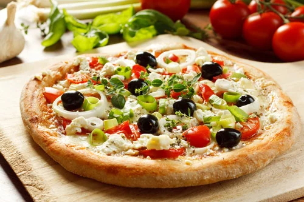
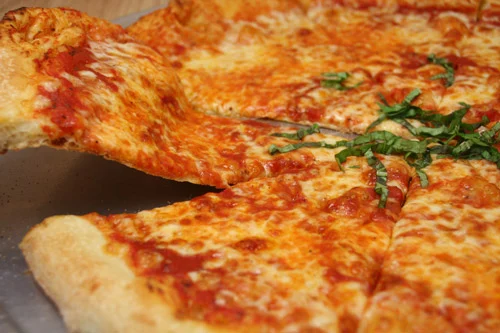

Neapolitan pizza is the original pie, dating back to the 18th century in Naples. The poorer citizens of the city would purchase cheap and quick-to-eat food. Luckilty fo them, Neapolitan pizza was affordable and readily available.

Also called Gormet pizza, this got it's start in the 70's in the Italian restaraunt called Prego. This pizza is known for it's unique variety in styles, and comes with many toppings or crusts of your choice.

Greek Immigrants brought this pizza to be popularized in New England. Thich and chewy, but not as thick as a deep-dish or a Sicilian crust.

With large, foldable slices and a crispy outer crust, New York style pizza has become america's most famous regional pizza. Some people say the unique flavor has to do with the minerals present in New York's tap water supply.

Chicago Pizza is also known as deep-dish style. Instead of imitating the notoriously thin pie, Ike Sewell created a pizza with a thick crust with raised edges in the restaurant Pizzeria Uno.

Also known as the "sfincione", this square-cut pizza provides a thick cut with pillowy dough, and cheese separating the crust from the sauce. This pizza became popular in the US after the second world war.